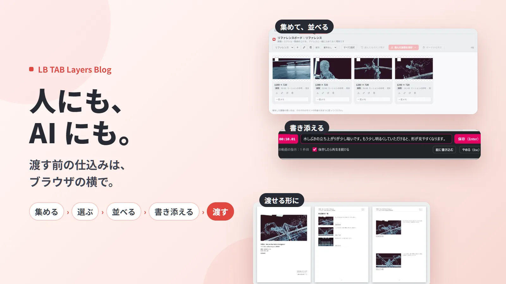
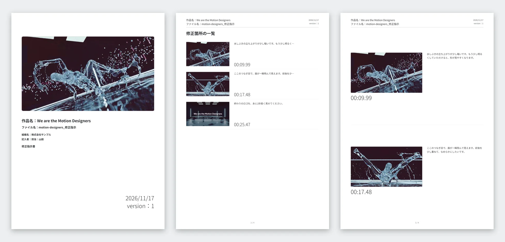

人に頼むときも、AI に聞くときも、まずは整えて渡す。なぜなら、受け取る側は、渡されたものしか見られないからです。材料がばらばらだと、相手はまず整理から始めることになり、返事が遅くなったり、ずれたりします。仕込みとは、相手と前提を揃えること。LB TAB Layers は、その手前の仕込み（集める・選ぶ・並べる・書き添える・渡せる形にする）を、ブラウザの横のサイドパネルで速くするための道具です。渡すのは、メールやチャットなど、いつものやり方で。
人に仕事を頼むとき。AI に質問するとき。どちらも、最初にやることは同じだと私たちは考えています。まずは整えて、渡すことです。
この記事では、渡す前の仕込みを 5 つの段階に分けて、それぞれ「なぜ大事なのか」を説明します。そのあとに、その仕込みを速くする LB TAB Layers の機能を差し込んでいきます。
人にも AI にも、整えて渡すと返ってくるものが変わる
相手が人でも AI でも、整えた材料を渡せば、返ってくるものが良くなり、やりとりの回数が減ります。
なぜなら、受け取る側は、渡されたものしか見られないからです。人は、こちらの頭の中を知りません。AI も、貼られた文字や資料からしか考えられません。材料がばらばらなまま渡すと、相手はまず整理から始めることになります。その分、返事は遅くなり、こちらの意図からずれやすくなります。
言いかえると、渡す前の仕込みとは、相手と前提を揃えることです。何のためか、何を元にしているか、どこを見てほしいか。前提がずれたまま渡すと、相手はそこを推測で埋めます。それが、ずれた答えや、あとからの手戻りになります。この前提を揃える作業を軽くして、整えて渡す。それがこの記事の話です。
渡す前の仕込みは、次の 5 つに分けられます。
| 仕込み | なぜ大事か | LB TAB Layers の機能 |
|---|---|---|
| 1. 集める | 渡す直前に、出どころを探し直さないため | タブを仕事ごとのグループに保存・リファレンスボード |
| 2. 選ぶ・並べる | 選ぶものを減らすと、考えが鋭くなるため | あとで整理・選択モード・ボードの並べ替え |
| 3. 書き添える | 一言の意図があれば、相手が迷わないため | ページのメモ・動画を止めて書く修正指示 |
| 4. 渡せる形にする（人へ） | 相手がそのまま開けて、社内で回せるため | PDF・PowerPoint・ZIP・テキストをコピー |
| 5. 渡せる形にする（AI へ） | 出どころつきでまとめて貼れば、抜けがなく確かめやすいため | AI に渡す・まとめてコピー・NotebookLM に送る |
そして、渡すのは、いつものやり方で。メールやチャット、社内の共有フォルダ。共有の道具は、もう手元にあるからです。
仕込み 1 集める — 出どころと一緒に
集めるときに大事なのは、集めたものと一緒に、出どころ（アドレス）を残しておくことです。
なぜなら、渡す直前に「どこのページだったか」を探し直すと、そこで手が止まるからです。出どころが分からない資料は、人に聞かれても答えられません。AI の答えを、元のページで確かめることもできません。
LB TAB Layers なら
- 開いているタブを、仕事ごとのグループに保存して ■ で閉じ、次に使うときは ▶ でまとめて開き直せます。保存先は Chrome のブックマークなので、拡張を消しても残ります。
- ページの画像・スクリーンショット・動画のコマ（一定の間隔で撮った静止画）は、リファレンスボードに、画像とページのアドレス・動画の再生位置と一緒にためられます（PRO）。
リファレンスボードの使い方は「【機能ガイド】リファレンスボード」に、まとめています。
仕込み 2 選ぶ・並べる — 集めることと、分けることを分ける
集めたら、渡すものを選んで、伝わる順に並べます。集めることと、分けることは、別の時間にやるのがこつです。
なぜなら、集めながら分けると、頭を使いすぎるからです。探している途中で「これはどの分類か」まで考えると、探すことに集中できません。まず集めて、あとでまとめて選び、並べるほうが速く進みます。
もう 1 つ、選ぶものを減らすと、考えが鋭くなります。候補が多すぎるまま渡すと、相手も迷います。渡す前に、自分で選んでおくことが大事です。
LB TAB Layers なら
- 行き先を考える余裕がないときは Ctrl+Shift+S で、いま見ているページを「あとで整理」のグループに入れておけます。
- あとで選択モードにして、複数のページを選び、まとめて別のグループへ移せます。
- リファレンスボードでは、並べ替えと一言メモができます。渡すものだけを選んで書き出せます（PRO）。
ページの入れ方と仕分け方は「見つけたページを、すばやくグループに入れる」でも紹介しています。
仕込み 3 書き添える — 一言で、伝わり方が変わる
選んだものには、なぜ選んだのか、どこを見てほしいのかを一言書き添えます。
なぜなら、資料だけを渡すと、相手は「どこを見ればいいのか」から考えることになるからです。「この色の参考」「0:12 のテンポ」のように一言あれば、人も AI も迷いません。
書き添えることは、自分のためにもなります。渡す前に一度メモにすると、言いたいことが整理されます。伝える質が上がり、やり直しの手間が減ります。
LB TAB Layers なら
- 見ているページにメモを付けられます。ページの文字を選んで右クリックすれば、そのページのメモに足せます。
- 保存したタブには、何のために取っておいたかを、一行のメモで残せます。
- 動画は、止めて、書いて、Enter。場面の絵と時刻が一緒に残り、再生は続きます（修正指示・PRO）。

【実体験】手間がかかっていたのは、前提を揃えて渡すことだった
私たちは、神戸で映像をつくっている会社です。企画の段階で、参考（リファレンス）の画像を集めます。以前は Pinterest を使ったりもしていましたが、結局は手元に集めて、伝えるために編集をしていました。
そのときに、Illustrator や PowerPoint にレイアウトし直して、参照元を伝えるアドレスを用意する。これが結構面倒でした。発注者に Pinterest のままは出せませんし、発注者は社内で PowerPoint や PDF で共有することが多いからです。
前提を揃えないまま進めて、揉めかけたこともあります。制作する側の当たり前と、発注する側の当たり前には、ズレがあります。ある企画で、私たちはナレーターなしでできると踏んでいました。ところが後から、ナレーションが要るという話になりました。最初に前提を揃えておけば、防げたことです。
そこで気づいたのは、時間がかかっていたのは「作る」ことではなく、その手前の「前提を揃えて、整えて渡す」ことだったということです。相手が人でも、AI でも同じです。だから今は、AI だろうが誰かにだろうが、まずは整えて渡すと決めています。LB TAB Layers は、それを速くするために作っています。
仕込み 4 渡せる形にする — 人に渡すなら
人に渡すなら、相手がそのまま開けて、そのまま回せる形にします。
なぜなら、受け取る人がそのまま開けない形だと、そこで止まるからです。発注者や上司は、受け取った資料を社内で回します。そのとき使われるのは、PDF や PowerPoint であることが多いです。
LB TAB Layers なら
- 修正指示は、表紙・修正箇所の一覧・場面ごとのページがついた PDF や PowerPoint にできます。チャットやメールに貼れる「【修正指示】①②③…」の文でテキストをコピーすることもできます（PRO）。
- 撮ったスクリーンショットは、まとめて PowerPoint（5 つの並べかた）や ZIP で保存できます。PDF での保存は PRO の機能です。
- リファレンスボードは、ZIP（アドレスの一覧つき）・PowerPoint・PDF に書き出せます。画像の下に、出どころのアドレスが入ります（PRO）。

修正指示のくわしい使い方は「【機能ガイド】修正指示」に、受け取る担当者さま向けの案内は「修正をお願いする担当者さまへ」にあります。
仕込み 5 渡せる形にする — AI に渡すなら
AI に渡すなら、選んだページとメモを、出どころつきでまとめて渡します。
なぜなら、AI は、貼られたものからしか考えられないからです。調べたページを 1 枚ずつ開いて、コピーして、貼っていくと時間がかかり、抜けも出ます。出どころ（アドレス）がついていれば、答えを元のページで確かめられます。
私たちは、AI を調べものの延長ではなく、自分の考えを磨くために使うものだと考えています。だからこそ、何を渡すかは、自分で選んでおきたいのです。
LB TAB Layers なら
- AI に渡す：グループの右クリック、または選択モードから、ページとメモを AI に貼りやすい形にまとめてコピーできます（PRO）。
- まとめてコピー：選んだページを、URL だけ・題名と URL・Markdown・HTML・CSV の形でコピーできます（PRO）。グループやページを Markdown でコピーするのは、無料でも使えます。
- NotebookLM に送る：選んだページを、NotebookLM のノートブックへ送れます。Google へのログインが要ります（PRO）。
- メモを入力欄に入れる：メモの「ページの入力欄に入れる」で、最後に押したページの入力欄に、メモの文を入れられます（PRO）。
どの機能も、操作は「ヘルプ：人に渡す」で、動く画像つきで見られます。NotebookLM へのまとめ方は「タブを NotebookLM にまとめて追加する」、AI チャットの答えをメモに残す方法は「AI チャットの回答を、元のページとひもづけてメモに残す方法」にまとめています。
渡すのは、いつものやり方で
仕込みが終わったら、渡し方は、いつも使っているやり方を選んでください。
なぜなら、共有の道具は、もう手元にあるからです。メール、チャット、社内の共有フォルダ。相手とのやりとりの道は、たいてい決まっています。新しい共有の場所を覚えてもらったり、アカウントを作ってもらったりすると、そこで止まります。会社の決まりで、外部の共有サービスを使えないこともあります。
だから LB TAB Layers には、独自の共有の場所やアカウントはありません。足りないのではなく、方針です。仕込みまでを手元で速く終わらせて、渡すところは、相手と決まっている道を使ってください。
LB TAB Layers なら
- 書き出した PDF・PowerPoint・ZIP や、コピーした文は、受け取る側が LB TAB Layers を入れていなくても開けます。
- アカウント登録はありません。グループとタブは Chrome のブックマークに、メモ・撮った画像・修正指示はこのパソコンの中に保存されます。当社のサーバーには送りません（ライセンスの確認に使う匿名の番号だけです）。AI の機能は、使ったときだけ、選んだサービスに送ります。
まとめ — 仕込みが速くなれば、考える時間が増える
人にも、AI にも。渡す前に前提を揃えて、整えておけば、返ってくるものが良くなり、やりとりが減ります。
| やること | なぜなら |
|---|---|
| 出どころと一緒に集める | 渡す直前に探し直すと、手が止まるから |
| 集めたあとで、選んで並べる | 集めながら分けると、頭を使いすぎるから |
| 一言を書き添える | 資料だけだと、相手はどこを見ればいいかから考えるから |
| 人には、開いて回せる形で | 開けない形だと、そこで止まるから |
| AI には、出どころつきでまとめて | AI は、貼られたものからしか考えられないから |
| 渡すのは、いつものやり方で | 共有の道具は、もう手元にあるから |
前提を揃える作業を軽くして、整えて渡す。この仕込みを、ブラウザの横のサイドパネルで速く終わらせるのが LB TAB Layers です。作業の時間が短くなった分、考える時間に回せます。
無料で、グループ 5 つまで使えます。PRO の機能（AI に渡す・まとめてコピー・修正指示・リファレンスボード・PDF の書き出しなど）は、入れてから 30 日間のお試しで、すべて使えます。PRO は買い切りの $12.99 です。アカウント登録はありません。
よくある質問
Q. AI に資料を渡すときは、どんな形がよいですか？
選んだページとメモを、出どころ（アドレス）つきでまとめて貼るのがおすすめです。AI は貼られたものからしか考えられないので、1 枚ずつ貼るより抜けが減り、答えを元のページで確かめられます。LB TAB Layers の「AI に渡す」は、ページとメモを AI に貼りやすい形にまとめてコピーします（PRO）。
Q. 受け取る側も LB TAB Layers を入れる必要がありますか？
いりません。書き出した PDF・PowerPoint・ZIP や、コピーした文は、受け取る側が LB TAB Layers を入れていなくても開けます。渡し方は、メールやチャットなど、いつものやり方を選べます。
Q. 共有の機能やアカウントはありますか？
ありません。共有の道具は、使う人の手元にすでにあると考えているからです。LB TAB Layers は、渡す前の仕込みを速くすることに絞っています。アカウント登録もありません。
Q. 無料でどこまで使えますか？
グループは 5 つまで、無料で使えます。グループやページを Markdown でコピーする、撮ったスクリーンショットを PowerPoint や ZIP で保存する、なども無料です。AI に渡す・まとめてコピー・修正指示・リファレンスボード・PDF の書き出しなどは PRO の機能で、入れてから 30 日間のお試しで使えます。
Q. 集めたものは、どこに保存されますか？
グループとタブは Chrome のブックマークに保存されます。メモ・撮った画像・修正指示は、このパソコンの中に保存されます。当社のサーバーには送りません（ライセンスの確認に使う匿名の番号だけです）。
▶ 実際の操作を動画で見る
サイドバーで、ブックマークとタブをいっしょに管理する様子です。